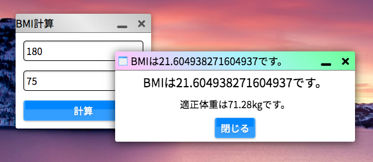

いよいよ、はじめてのkitアプリケーションを作ってみましょう。
簡単な「BMIを計算するアプリケーション」を作ってみましょう。まずは、/app以下にbmiという名前のディレクトリを作成します。
ここで作成したディレクトリの名前がアプリのIDとなります。
kitアプリケーションに必須であるdefine.jsonを、アプリケーションディレクトリの直下に以下のような内容で配置します。
{
"id": "bmi",
"name": "BMI計算",
"icon": "none",
"version": "1",
"author": "authorName",
"support": {
"darkmode": true,
"resize": false,
"fullscreen": false
},
"size": {
"width": "auto",
"height": "auto"
},
"view": "default.html",
"script": "bmi.js",
"css": "none"
}
define.jsonの内容を変更することでアプリの名前やバージョン情報を自由に定義できます。define.jsonの書き方についての詳細はこちらを参照してください。
重要なのはviewで定義したファイルがテンプレートとしてロードされ、scriptで定義したJavaScriptファイルが実行されるということです。
次に、define.jsonで定義したdefault.htmlにHTMLでアプリを作っていきます。
このメインのテンプレートのファイル名は何でもいいのですが、慣習的にdefault.htmlという名前で作る場合が多いです。
BMIを算出する式は、体重 ÷ (身長)^2です。体重と身長を入力するフィールドを配置することが考えられます。
<input type="text" class="textbox m" placeholder="身長(cm)"><br>
<input type="text" class="textbox m" placeholder="体重(kg)">
<kit-button class="kit-block m">計算</kit-button>
2つの<input>タグにkitstrapの.textboxクラスを付与し、スタイルを設定します。そして、<kit-button>要素を使って計算ボタンを配置しましょう(ブロック要素にするために.kit-blockクラスを付与します)。
.mクラスは、要素にmarginを付与します。.pクラスは要素にpaddingを付与します。詳細はkitstrapのドキュメントをご確認ください。
この時点で、アプリケーションを開いてみる(検索ボックスに「bmi」を入力し、「アプリを起動する」をクリック)と、次のような見た目が完成しているはずです。
ただし、現状ではボタンをクリックしても何も起きません。ここからスクリプトを書くことでBMI計算アプリとしての動作を完成させましょう。
define.jsonの中でスクリプトとして指定したbmi.jsというファイルを作ってください。この時点で、アプリのディレクトリの中身は次のようになっているはずです。
app
└── bmi
├── bmi.js
├── default.html
└── define.json
スクリプトとして指定したJavaScriptのコードは、アプリの起動時に自動的に実行されます。
kitアプリのスクリプトの基本形は次の形です：
((_pid) => {
//ここにスクリプトを記述
})(pid);
kitアプリケーションをスクリプトありで作る場合、毎回このひな形から作り始めましょう。
これは、アプリのプロセスIDを引数に取る即時関数です。関数スコープを持ち、
_pid変数を使うことでプロセスIDを使った処理を行うことができます。プロセスIDは、アプリケーションの起動時に割り振られる識別子で、プロセスを判断し操作するのに重要なものです。
実は、ボタンのクリック時のイベントを設定して、<input>タグの内容を取得して計算をする処理を書いて…というのは少し面倒ですが、kit apps
framework(kaf)の機能を使うことでこれらは簡単に実現することができます。
kafを使うことで、JavaScriptコーディングの量を劇的に少なく、あるいはまったくなくすことができます(実際に、welcomeアプリではJavaScriptによるコーディングは1行もありません)。default.htmlに次のように少し書き加えます。
<input type="text" class="textbox m" placeholder="身長(cm)" kit-bind="height"><br>
<input type="text" class="textbox m" placeholder="体重(kg)" kit-bind="weight">
<kit-button class="kit-block m" kit-e="calc">計算</kit-button>
2つの<input>要素のkit-bind属性にそれぞれ"height"、"weight"という名前をつけます。こうすることで、スクリプトからApp.data()メソッドを使ってバインドされたデータを取得することができるようになります。
また、<kit-button>要素にkit-e属性に"calc"というイベント名を指定し、ボタンのクリック時にcalcというイベントが呼び出されるようにします。
kit-e="calc"という記述は、実はkit-e="calc click"の省略形です。イベント名のあとに半角スペースを空けてイベント種類(event.type。詳細はこちらの記事を参照)を指定することでイベントの実行条件を定義できるのですが、clickの場合のみ省略できます。
それができたら、スクリプト側でcalcというイベントを定義しましょう。あと少しで最初のkitアプリが完成します。
((_pid) => {
// "calc"というイベントを設定
App.event(_pid, "calc", ()=>{
// heightとweightを取得
let h = App.data(_pid).height;
let w = App.data(_pid).weight;
// 数値に変換
h = Number(h) / 100;
w = Number(w);
// 計算
let BMI = w / (h * h);
let apt = (h * h) * 22;
// アラート表示
System.alert(`BMIは${BMI}です。`, `適正体重は${apt}kgです。`);
});
})(pid);
App.event()メソッドでイベントを定義します。第1引数はプロセスID(先ほど即時関数の仮引数とした_pidを使います)、第2引数はイベント名(ここでは"calc")、第3引数に実行される関数そのものを記述します。kafのイベントはプロセスごとに管理されるため、他のアプリとのイベント名の重複は気にする必要がありません。
変数hとwにそれぞれ身長、体重の値を格納します。それを数値に変換し、BMIと適正体重を算出後、システムネイティブのSystem.alert()メソッドを使ってアラートとしてBMIと適正体重を表示するというスクリプトになっています。
これで、はじめてのkitアプリが完成です！実際にアプリを起動してみましょう。

数値を入力して、計算ボタンをクリックするとBMIが算出されるはずです。
さて、kitアプリの作り方が分かったでしょうか。もうあなたは自由にkitアプリを作成できるでしょう。
もしくは、まだ改善点のあるbmiアプリを改良してみるのもよいでしょう。